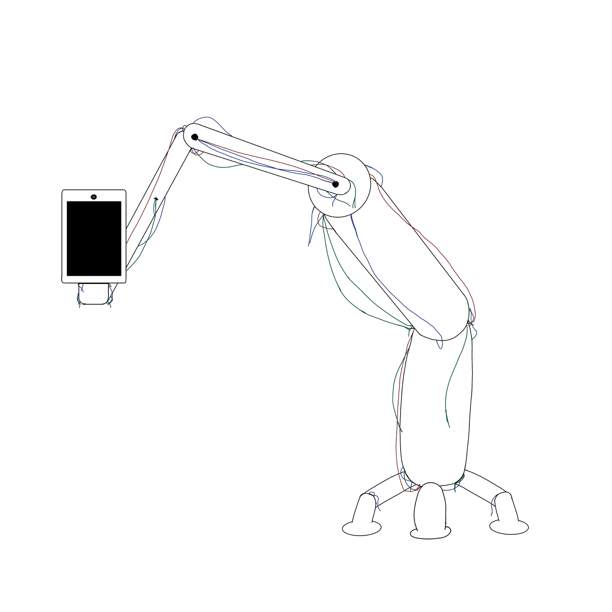

B.F.U.-013 "Распознаватель лиц"
Описание аномалии
Объект B.F.U.-013 появился в фонде относительно недавно – в 201█ году – после установки обычных распознавателей лиц, однако о нём быстро стало известно всем сотрудникам учреждения. Объект представляет собой одноногое существо, на месте его лица располагается экран с камерой для распознавания человеческих лиц. Он изготовлен из пластмассы, а внутри содержит некоторое количество не особо связанных друг с другом проводов и электросхем. При попадании человека в радиус обнаружения B.F.U.-013 направляет свою камеру на него. Если лицо субъекта было успешно распознано, то B.F.U.-013 делает ещё одну фотографию, пополняя свою базу данных, и уходит прочь, оставляя человека в покое. Однако, если же лицо субъекта не распознаётся, то B.F.U.-013 начнёт следовать за ним, пока сотрудники Фонда не обновят базу данных. Некоторые люди начинали испытывать экзистенциальный кризис после встречи с объектом и постоянно задавались вопросом: “А может, я вообще не существую?”. К счастью, подобные случаи, зачастую происходящие с теми лаборантами, находящимися в Фонде недавно, быстро пресекались Старшими сотрудниками, и на данный момент объект B.F.U.-013 не причинил необратимого вреда.
Особые условия содержания
С 201█ года, в случае свободного нахождения B.F.U.-013 на территории Фонда, мерой предосторожности служило занесение биометрии всех «новых лиц» в базу данных системы Б.Ф.У., к которой объект всегда имел доступ (ограничить его не смогли по сей день). Однако, в связи с проведением мероприятий на территории Фонда, в которых участвуют не только научные сотрудники, было принято решение об ужесточении мер содержания объекта. В связи с этим, Указом №12 с 01.04.201█ года у B.F.U.-013 более не должно быть возможности распознавать лица, поэтому его «голову» следует чем-то накрывать – чёрным пакетом или тканью, а также заклеивать камеру.